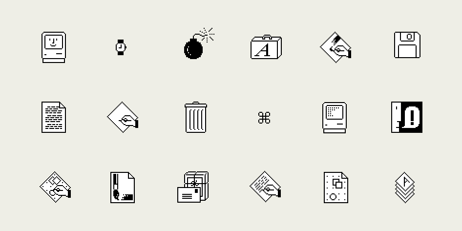
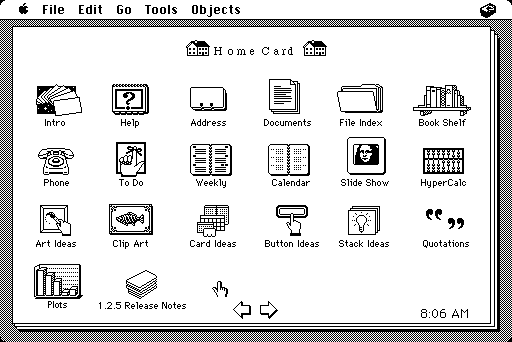
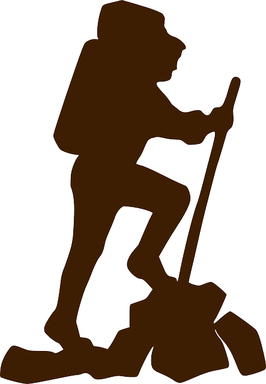
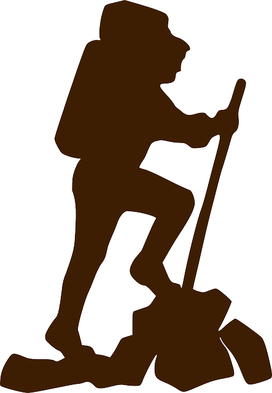

The Evolution of Web Design
The journey of web design began in the early 1990s with simple text-based sites, where minimal HTML was the norm. As the internet expanded, so did the need for more engaging and visually appealing web pages.
In the late 1990s, the introduction of CSS allowed designers to separate content from presentation, offering more control over the look and feel of websites. This era saw the rise of table-based layouts, which, despite their limitations, were a significant improvement over previous methods.
The early 2000s marked a pivotal point with the adoption of JavaScript and Flash, enabling interactive content and animations. This period witnessed the birth of dynamic websites that could respond to user interactions, paving the way for modern web applications.
As mobile devices became ubiquitous, responsive design emerged as a critical aspect of web design. Frameworks like Bootstrap and Flexbox helped designers create flexible layouts that adapt to different screen sizes, ensuring a consistent user experience across devices.
Today, web design is not just about aesthetics but also about functionality, accessibility, and performance. Modern tools like React and Angular facilitate the development of single-page applications, while design systems ensure brand consistency and streamline the design process.
The future of web design looks promising with the advent of technologies like artificial intelligence and virtual reality, which are poised to redefine how users interact with digital content.
1980 - Hypercard
1980 marked a year of technological shifts as Apple introduced Hypercard, a revolutionary program allowing users to create interactive, visual content that was interconnected.
With Hypercard, anyone could create simple yet powerful programs without deep programming knowledge. This was a milestone as it brought the concept of hypertext to the public, laying the groundwork for the web as we know it today.
Hypercard was a digital experiment significant to the computing world, paving the way for web pages and interactive media development. It was the first example of a user interface based on a linked structure—similar to the later World Wide Web developed in 1990.
In many ways, it was a "gem" from early computing history, still admired by tech enthusiasts today. The application relied on simple graphics, ASCII text, and minimal navigation elements compatible with the computers and monitors of the time.
https://winworldpc.com/product/hypercard
The software was very popular on early Macintosh computers and influenced many later interactive programs.
https://lowendmac.com/2003/remembering-hypercard/
1990 - World Wide Web
Das Jahr 1990 war ein Meilenstein der digitalen Revolution. Tim Berners-Lee stellte das World Wide Web vor.
Das World Wide Web machte Informationen zugänglicher als je zuvor. Es führte zu einem globalen Netz, das Menschen, Unternehmen und Ideen miteinander verbindet. In den folgenden Jahren wurden HTML, URLs und HTTP zum Standard, wodurch Webseiten weltweit erstellt und aufgerufen werden konnten.
Das Design von Webseiten in dieser Ära war minimalistisch, mit Fokus auf Funktionalität. Klare Strukturen, einfache Farbpaletten und grundlegende Typografie waren die Regel. Gleichzeitig legte das frühe Web den Grundstein für moderne Webdesign-Techniken, wie wir sie heute kennen.
Die Vision des World Wide Web war es, Informationen für jeden Menschen auf der Welt zugänglich zu machen. Diese Idee hat bis heute Bestand und beeinflusst, wie Technologien für Kommunikation und Wissen entwickelt werden.
2000 - From Static to Dynamic
The 2000s saw a significant evolution in web technology, transitioning from static HTML pages to dynamic, server-driven content. Technologies like PHP, AJAX, and databases like MySQL enabled developers to create web applications that were interactive and responsive to user inputs.
Hover Effect: Enhances user interaction by providing visual feedback when users hover over elements.
Special Feature: Creates an engaging experience, making the interface feel more dynamic and responsive.
Why It's Unique: Offers immediate feedback and emphasizes elements, effectively guiding user attention.
 



2010 - Parallax Effect
2010 - Parallax Effect Introduction
The year 2010 marked a significant evolution in web design with the emergence of the parallax effect. This technique utilizes various layers moving at different speeds to create an illusion of depth, making websites more dynamic and engaging.
The parallax effect was initially popularized in video games and soon found its way into web design, enhancing user experience through visually appealing interactions. Websites began to adopt this technique to guide users' attention and create a narrative journey through scrolling.
Incorporating parallax effects requires careful consideration of performance and accessibility. Designers must ensure that animations do not hinder user experience on slower devices and remain accessible to users with disabilities.
Beyond aesthetics, the parallax effect offers practical benefits in storytelling and data visualization. By leveraging depth and movement, designers can highlight important content and create memorable user experiences.
As web development continues to evolve, the parallax effect remains a powerful tool in a designer's arsenal, offering endless possibilities for creativity and innovation.
2020 - Embracing Dark Mode
The year 2020 saw the widespread adoption of Dark Mode across various platforms and applications. It offers a sleek, modern look while reducing eye strain in low-light environments.
Dark Mode not only enhances visual ergonomics but also helps in conserving battery life on OLED screens. The trend has become a staple in UI design, offering users the choice to toggle between light and dark themes based on their preference.